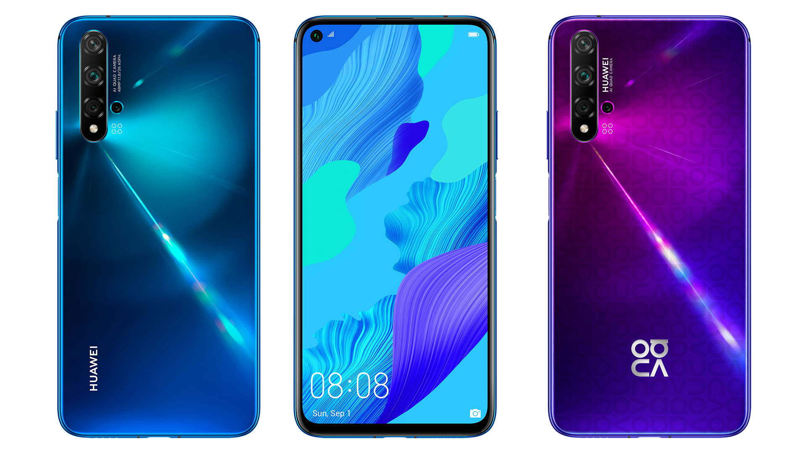
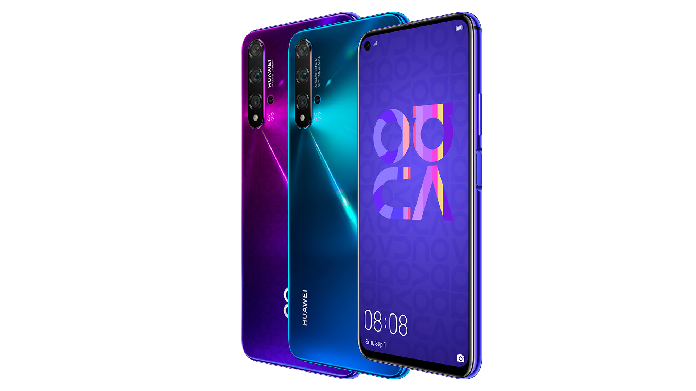
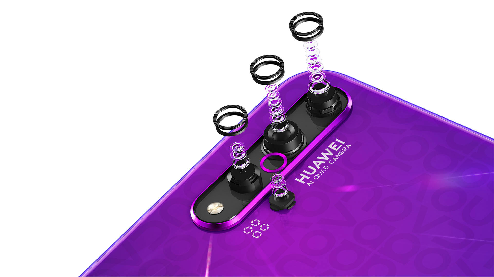

Povrch na zadnej strane smartfónu sa vyznačuje výraznou textúrou, vďaka ktorej dopadajúce svetlo vytvára jedinečný 3D efekt. Ten je ešte zvýraznený v prípade verzie Midsummer Purple, v ktorej je 3D efekt ešte doplnený o vzorkovanie v tvare písmen názvu Nova.
-
Dizajn
-
Snimac otlackov
 Nie je pochýb o tom, že snímač odtlačkov patrí stále k najkomfortnejšiemu spôsobu zabezpečenia smartfónu. Prst máte predsa stále so sebou. Namiesto jeho umiestnenia v displeji však Huawei siahol po jednoduchšom a najmä pre používateľa rýchlejšom riešení.
-
Vysoky vykon
 Možno si myslíte, že v tomto prípade budete musieť zanevrieť na výkon, no opak je pravdou. Huawei Nova 5T sa totiž spolieha na aktuálne najvýkonnejší procesor medzi smartfónmi Huawei na našom trhu. Podobne, ako v prípade vlajkovej lode Huawei P30 Pro, aj tu nájdete procesor Kirin 980.
-
5 fotoaparatov
 Tak ako dizajn a výkon, rovnako dôležitý je v prípade smartfónu aj fotoaparát a preto nenecháva Huawei Nova 5T nič na náhodu. Ak by sme sa na jeho sústavu snímačov pozreli matematicky, tak ich tu nájdete rovno päť.
-
Cena
Možno si poviete, že takto vybavený smartfón vás ako darček zruinuje. No nie je tomu tak. Na slovenskom trhu sa Huawei Nová 5T predáva v modrej, Crush Blue a fialovej Midsummer Purple farebnej verzii za odporúčanú maloobchodnú cenu 449 EUR.